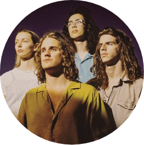
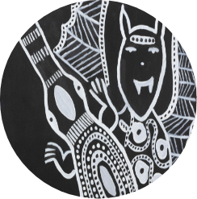

Following huge demand for their first show, Spacey Jane announced a second date on their forthcoming national Sunlight tour. They're joined by special guests Jack Davies and the Bush Chooks.
Sat 10 Apr 2021 | 6:00pm — 10:00pm | South Lawn
Ocean Alley are stoked to reveal their first national tour of Australia since 2018 winds up on FAC’s South Lawn on Sat 11 Sep,
supported by Psychedelic Porn Crumpets and Dulcie.
Sat 11 Sep 2021 | 6:00pm — 10:00pm |South Lawn
Presenting the best new and emerging Aboriginal artists from remote, regional and metro WA, Revealed 2021 will showcase artworks across painting, installation, textiles and photography
Fri 26 Mar 2021-Sun 23 May 2021 | 10:00am — 5:00pm | South Wing and Collection Galleries
Fremantle Art Centre has a range of
creative art courses suited for both
adults and kids. Whether you like
making jewellery, art prints or
sculptures, there is a course for
everyone and anyone.
Housed in a gothic building built in the 1860s, the
site now known as the Fremantle Arts Centre has a
long and fascinating history. Built by convicts on
a grant of six acres, this splendid example of
Australian Gothic architecture first opened its
doors in 1864, as the Convict Establishment
Fremantle Lunatic Asylum and Invalid Depot.
In 1958, the old Fremantle Lunatic Asylum was
finally threatened with demolition and was saved
largely through the efforts of Sir Frederick
Samson, then Mayor of Fremantle. His vision for
the site was to establish both a Mariners’ Museum
and an Arts Centre. The building was restored
and the museum stage was finally completed in
1970.
Fremantle Arts Centre opened in 1973, with Ian
Templeman as Founding Director. Templeman
relied on minimal resources and skeleton staff for
support and, over his 17 years at the helm,
developed Fremantle Arts Centre’s first programs
and services, including Fremantle Arts Centre
Press.